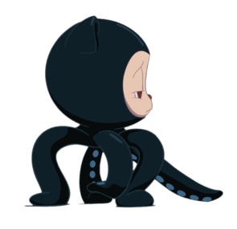

All about github
QnA
- Q. What is a version control system?
- A version control system (VCS) is a software tool that helps track and manage changes to source code, allowing multiple contributors to work on a project simultaneously. It helps in organizing and maintaining different versions of the codebase and facilitates collaboration among developers.
- Q. What is Git?
- Git is a distributed version control system (DVCS) that helps manage and track changes in source code during software development. It allows multiple developers to work on a project simultaneously and efficiently handles branching, merging, and version history. Git is widely used and known for its speed, flexibility, and robustness.
- Q. What is GitHub?
- GitHub is a web-based platform that provides hosting for Git repositories. It allows developers and teams to collaborate on projects, track changes, manage versions, and contribute to open-source projects. GitHub offers various features like issue tracking, pull requests, code review, and project management tools, making it a popular choice for hosting and collaborating on code.
- Q. What is the difference between Git and GitHub?
- Git is a version control system that helps manage source code, while GitHub is a web-based platform that provides hosting for Git repositories. Git is the tool used for version control, whereas GitHub is the platform where Git repositories can be hosted, shared, and collaborated upon.
- Q. Who started GitHub and how was it started?
- GitHub was founded by Tom Preston-Werner, Chris Wanstrath, and PJ Hyett in April 2008. It started as a project to simplify sharing code and collaboration among developers using Git. The founders aimed to create a platform that would facilitate efficient collaboration and make it easier for developers to contribute to open-source projects.
- Q. What company owns it now?
- As of my last knowledge update in September 2021, GitHub is owned by Microsoft Corporation. Microsoft acquired GitHub in June 2018.
- Q. How much does a GitHub account cost?
- GitHub offers various account plans, including a free plan for public repositories and limited private repositories. The cost for private repositories and additional features varies based on the plan, which can range from free to paid subscriptions. The pricing details can be found on GitHub's official website.
- Q. What is the Octocat?
- The Octocat, often referred to as the Octocat logo, is the friendly and widely recognized mascot of GitHub. It is an anthropomorphized cat with octopus-like arms, symbolizing the combination of Git (the octopus, representing branching) and the friendliness of a cat. The Octocat is an iconic part of GitHub's brand and is used in various forms across the platform.
Git/Github terms:
- Repository: A location where all the files and resources related to a project are stored. It serves as a central hub for a project's source code and other related files, enabling collaboration and version control.
- Commit: A specific version of a project or repository at a particular point in time. Developers make commits to record changes they've made to the code, creating a history of the project.
- Fork: To create a copy of someone else's repository in your GitHub account. This allows you to freely experiment with changes without affecting the original repository.
- Push: The action of sending your local code changes to a remote repository on GitHub. This makes your changes accessible to others and updates the repository's history.
- Pull Requests: A GitHub feature that allows contributors to propose changes to a repository. It enables discussion, review, and eventual merging of the proposed changes into the repository.
- Workflows: A set of automated actions defined in a GitHub Actions configuration file. Workflows are triggered by events and help automate various processes within a repository.
- Issues: A way to track tasks, enhancements, bugs, or other types of questions within a repository. Issues facilitate collaboration, discussion, and resolution of specific topics.
- Raw Button: A button in GitHub that allows you to view the raw content of a file, without any formatting applied, directly in the browser.
- Blame Button: A button in GitHub that shows the commit and author details for each line of a file. It helps trace changes back to their respective commits and authors.

|